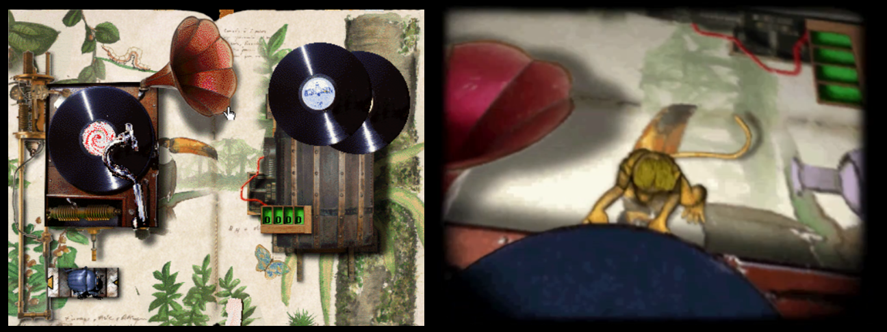

ANECDOTES
ATTENTION : Les informations ci-dessous sont suceptibles de divulgâcher l'intrigue des jeux.
Les oncles Ernest
L’oncle Ernest est joué par plusieurs comédiens français : Michel Beaujard dans l’Album Secret, et Maurice Lustyk dans les tous les autres opus avec un doublage vocal de Patrice Baudrier.
Michel Beaujard (1949-2018) a principalement fait carrière au théâtre, où il a participé notamment à des productions comme Lorenzaccio, Jean Moulin aujourd’hui, La Guerre entre parenthèses, Carnets d’agonie et Faust. Il apparaît également au cinéma, notamment dans Maladie d’amour de Jacques Deray et dans le court métrage La Petite Mort de François Ozon.
Maurice Lustyk (1929-2012) a travaillé dans différents domaines du spectacle, notamment au cinéma, à la télévision et au théâtre. Parmi ses apparitions à l’écran figure notamment Elle s’appelait Sarah de Gilles Paquet-Brenner, sorti en 2010, dans lequel il interprète l’homme au violon.
Patrice Baudrier (1957) est particulièrement connu pour sa carrière dans le doublage. Il participe pendant plusieurs années à des tournées de théâtre classique, avant de travailler dans une compagnie de théâtre pour enfants puis de se consacrer au doublage. Il devient notamment la voix française régulière de Jean-Claude Van Damme. Il prête également sa voix à de nombreux personnages dans l’animation (Maître Croc dans Kung Fu Panda, M. Krabs dans Bob l’éponge, etc.) et le jeu vidéo (Geralt de Riv dans The Witcher, Shéogorath dans The Elder Scrolls III: Morrowind & The Elder Scrolls V: Skyrim, plusieurs personnages de BioShock et Mass Effect…)
NB : Patrice Baudrier double aussi Chipikan et Magister dans le Temple Perdu et la Statuette Maudite !
Les premières pages
La première page de l'Album secret ("Tom") est visible également dans Le Fabuleux Voyage (où elle illustre la dégradation de l'album), puis dans l'Ile mystérieuse où elle a retrouvé son état normal.

Les cartes de l'île
On remarque que la carte de l'Ile mystérieuse état déjà présente dans l'Album secret. Rappelons que c'est le lieu où l'Oncle Ernest aurait caché son trésor.
D'un jeu à l'autre, la carte a subit des modifications mineures, et surtout des ajouts : ci-dessous à gauche la carte dans l'Album secret, et à droite dans l'Ile mystérieuse après avoir débloqué toutes les pages.

Gustave & l'ernestophone
Dans Le Fabuleux Voyage, ce disque est rayé exactement au moment où l'oncle Ernest donne le code. Une explication est donnée dans la cinématique d'introduction de l'Ile Mystérieuse : on y voit Gustave arracher le disque en pleine écoute...

Tom et son nid
Entre l'Album secret et Le Fabuleux Voyage, Tom semble avoir emménagé la salle au trésor. On distingue même la statuette aux yeux verts en bas à droite. A noter que cette page est rendue directement accessible dans l'Ile mystérieuse, de manière purement optionnelle. On y accède à partir de la page Grotte, en cliquant dans la crevasse à gauche de la statuette du Dieu Pachakamak. Ernesto fait remarquer que cette page abritait autrefois un trésor caché par l'oncle Ernest.

Radio Bernard-l'ermite
Dans l'Ile Mystérieuse, cette fameuse radio diffuse de la chanson française des années 30. C'est cohérent avec la biographie de l'oncle Ernest : celui s'échoue sur l'île en 1933.
Pour les plus curieux, voici la liste de ces chansons (directement recopiée à partir des crédits du jeu) :
Lyane Maireve orch F. Warms
(Vasilecu/A. Mauprey/H. Geiringer)
1937 ed. Fortin
« QUAND ON SE PROMENE AU BORD DE L’EAU »
Jean Gabin du film « La Belle équipe »
Orch Pierrot (M. Yvain/J. Duvivier)
1936 ed. Joubert
« J’ATTENDRAI »
Rina Ketty
(D. Olivieri/L. Poterat)
1938 F. Day
« SUR LES QUAIS DU VIEUX PARIS »
Lucienne Delyle orch M. Cariven
(R. Erwin/L. Poterat)
1939 ed. Méridian
« LA PETITE TOKINOISE »
Joséphine Baker orch E. Mahieux
(V. Scotto/Christiné/Villard)
193 ed. Salabert
« PARLEZ-MOI D’AMOUR »
Lucienne Boyer
(J. Lenoir/J. Lenoir)
1930 SEMI
« C’EST VRAI »
Mistinguette
(Al. Willemets/ C. Oberfeld)
1935 Salabert
« LA GUINGUETTE A FERME SES PORTES »
Damia orch P. Chagnon
(M. Montagne/C. Zwingle)
1935 ed. SEMI
« LES GARS DE LA MARINE »
Jean Murat du film « Le capitaine Craddock »
(WR. Heymann/Werner/J. Boyer)
1931 ed. Salabert
« FELICIE AUSSI »
Fernandel orch P. Chagnon
(C. Oberfeld/A. Willemetz/C. Pothier)
1939 DP
« ELLE EST EPATANTE »
Michel Simon de l’opérette
« Le Bonheur, Mesdames » orch P. Chagnon
(H. Christiné/A. Willemetz)
1935 ed. Salabert/Joubert
« LA JAVA BLEUE »
Frehel
(G. Koger-Renard/V. Scotto)
1939 Beusher